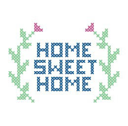

First timers, starting can feel like a lot. But dont worry its easy!
For advanced stitchers, this will make starting easier so you can get to stitching faster
Find a project you like
One of the most important things when stitching, is working on a project you enjoy. Depending on their size and how frequently you stitch, projects can take years, so find a project you'd like to work on for many hours.
Some like to work on a traditional style project
while others like to work on more modern pieces
Keep size in mind while stitching. if its your first time, you might not want to pick too large of a project and get overwhelmed. But by all means, if you love the way a project looks, jump right in!
Decide on the finished size you want
now that you've decided on your project, lets look at how many stitches wide and tall it is, and calculate what stitch sizes you'll want
If you're new to cross stitch and dont want to dig into what fabrics and sizes your cross stitch might be, or you have a kitted project and want to use the fabric in the kit, feel free to skip down to step 5.
There are a few things to go over first before digging into the calculator.
Fabrics can vary widely in thread counts. The lower the number the larger the spaces are for your X's on the fabric, and the higher they are, the smaller your stitches get.
Low thread counts are good for those who are beginning or those who might have a hard time seeing really small holes. The most common size to stitch on is 14 count.
High thread counts are good for detailed projects that you want to look like the picture. Many large modern projects use fabric thread counts of 25 to 32. Some people may even opt for 40 count fabrics.
In short, "over 1" means you're stitching over 1 little block in your fabric to make the X. "over 2" means you're spanning two blocks in your fabric to make a bigger X. For more details make sure to check out the How-To sectio
Many people stitch over 1, but when working with high thread count fabrics, some people switch to over 2. The easiest option for beginners is to stick with 14 count fabrics over 1.
Now its time to calculate.
|
Fabric Count |
14 |
|---|---|
|
Stitching Over 1 or Over 2 |
1 |
|
Stitches Wide |
200 |
|
Stitches Tall |
150 |
|
Width (in) |
10 |
|---|---|
|
Height (in) |
9 |
With the calculations above, you now know what size fabric you need, and the thead count that will get you there
Decide what type of fabric you want
The fabric type you choose depends entirely on your personal preferance.
The easiest fabric for beginners is Aida. The holes are very easy to see, and the fabric is very forgiving if you accidentally pull your stitches too tight. Many people love Aida and never move away from it. This type of fabric can range from 14 count to 20 count
Some stitchers are afraid to move into Linen and Evenweave fabrics. Sure your stitching style might change slightly to accomodate the fabric, but have no fear! its not as scary as it sounds.
The benefits of these types of fabric is the detail you can get into your cross-stitch projects and small stitches. Even if you're doing larger stitches on a high thread count fabric, a smooth looking background fabric can be a nice touch to a finished project.
|
Fabric Name |
Thread Count Range |
|---|---|
|
Aida |
14-20 |
|
Lugana |
20-40 |
|
Linen |
28-40 |
Types of fabrics vary widely and there are a lot more than what I've listed here. Make sure to check out the materials section for more details.
Find out how much embroidery floss you need
Oftentimes, if you're buying a chart (the pattern that guides your stitching) the person who made that chart will include the length of embroidery floss you'll need for each color. Other times, you can import your pattern into programs like Pattern Keeper and you can see how many stitches you have of each color.
A skein is one bundle of 6 strand embroidery floss thats 6 feet in length. Depending on your number of stitches, how many threads you plan to use, and what your fabric thread count is, will all play into how much embroidery floss you need
Now its time to calculate.
|
Fabric Count |
14 |
|---|---|
|
Stitching Over 1 or Over 2 |
1 |
|
Color Code |
Stitches |
Skeins Used |
Skeins Needed |
|---|---|---|---|
|
300 |
2000 |
1.1 |
2 |
|
600 |
1000 |
.9 |
1 |
With the calculations above, you now know how much to buy of each color of your embroidery floss.
Get organized
Organizing can often make or break how much a person enjoys to stitch. If you're not organized at all, it can be difficult to find the colors you need when you need them, or worse, they can turn into a tangled mess.
Many people use clear plastic boxes to keep their threads, scisors, and highlighers together. This is helpful to keep your threads separated to keep them from tangling. And makes it easy to put your project away when you're not stitching.
Bobbins are a great tool to keep threads wound up nice and tidy
Start stitching
Its finally time to start stitching! YAY! If this is your first time, make sure to check out the How-To to get started